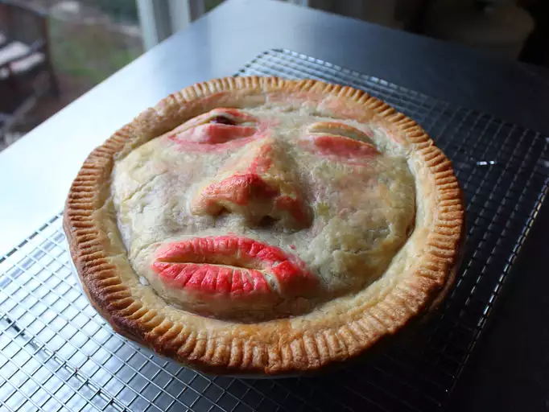

Chef John's Face Pie
Back

Description
A few months ago I saw a pie image on Twitter so creepy and disturbing that I actually questioned whether it was too terrifying
to post as a video. Usually, Halloween-themed recipes have the opposite problem,
as they are almost never actually scary, but that's not an issue here. By the way, can someone get sued for giving people nightmares?
Ingredients:
Crust
- 3 cups all-purpose flour
- 1 teaspoon kosher salt
- 2 sticks unsalted butter, sliced, frozen
- 2 teaspoons distilled white vinegar
- 7 tablespoons ice cold water
Spice Blend
- 2 teaspoons kosher salt
- 1 teaspoon freshly ground black pepper
- 1 teaspoon dried thyme
- ½ teaspoon dried sage
- ½ teaspoon ground cinnamon
- ½ teaspoon ground ginger
- ¼ teaspoon freshly grated nutmeg
- ¼ teaspoon ground allspice
- ¼ teaspoon ground mustard
- ⅛ teaspoon ground cloves
- 1 pinch cayenne pepper
Filling
- 1 large russet potato, peeled and quartered
- 1 teaspoon kosher salt
- 1 tablespoon butter
- 1 large onion, finely chopped
- 1 pinch salt
- 4 cloves garlic, crushed
- ½ cup finely diced celery
- 1 pound ground beef
- 1 pound ground pork
Egg Wash
- 1 large egg
- 1 tablespoon water
- ½ grape
- 2 drops red food coloring, or as needed
Directions
- Place flour, salt, and frozen butter slices in the bowl of a food processor. Pulse on and off until butter is about the size of peas, about 30 seconds. Stir vinegar into water; drizzle over the flour mixture. Pulse on and off until mixture is crumbly and holds together when you pinch a piece off, about 10 seconds. Drizzle in another teaspoon of water if dough can't be pressed together.
- Transfer mixture to a work surface. Press it together into a ball. Wrap in plastic wrap. Refrigerate until chilled, at least 1 hour.
- Mix salt, pepper, thyme, sage, cinnamon, ginger, nutmeg, allspice, mustard, cloves, and cayenne together in a small bowl.
- Place potato quarters in a saucepan; cover with cold water. Add 1 teaspoon kosher salt. Bring to a boil over high heat; reduce heat. Simmer until cooked through, 10 to 15 minutes. Scoop out potatoes and transfer to a bowl; save cooking liquid. Mash potatoes with a potato masher while still hot.
- Melt butter in a skillet over medium heat. Add chopped onion and a pinch of salt. Cook and stir until onions turn golden, 10 to 15 minutes. Stir in spice blend, garlic, and celery. Stir until evenly coated with the spices, about 30 seconds. Add beef and pork. Ladle about 3/4 cup of the reserved potato cooking liquid into the skillet.
- Cook and stir until meat is browned and has a very fine, paste-like texture. Continue cooking, stirring occasionally, until meat is tender and most of the liquid has evaporated, about 45 minutes. Stir in mashed potatoes. Remove from heat and cool to room temperature.
- Line a large baking sheet with parchment paper. Place a pie plate upside-down onto the parchment. Trace the rim to make the circular area for the face.
- Divide chilled dough into 2 pieces, one slightly larger than the other.
- Keep the smaller piece of dough chilled while working with the large piece. Tear off dough to make the brow ridge and roll it into a thick log slightly shorter than the diameter of the circle. Place it near the top of the circle, below the forehead region. Form a pyramid with a triangular base and place it about 1 1/2 inches below the brow bone.
- Roll 2 smaller pieces of dough into strips for the lips. Roll 2 more for the cheekbones. Form lumps for the eyes and place them above the cheekbones. Shape a small lump into the cleft above the lip. Refrigerate the rest of the dough and freeze facial features until firm, 20 to 30 minutes.
- Shape remaining dough into a disc and roll out until 1/8 inch thick. Center the skin over the facial features. Use fingertips to carefully contour the skin to the facial features and smooth out the edges. Dip fingers in water as needed. Refrigerate for a few minutes whenever the dough gets too warm.
- Poke nostrils into the base of the nose using a chopstick. Carve out a pupil-sized amount of dough from one eye. Draw 2 horizontal slits across the center of the other eye. Freeze face until firm enough to slide off the parchment, about 15 minutes.
- Preheat the oven to 375 degrees F (190 degrees C).
- Roll the smaller piece of dough into a circle large enough to line a 9-inch deep dish pie plate with a slight overhang. Fill crust with the meat mixture; smooth out the surface.
- Remove face from the freezer and place on top of the pie. Let thaw until edges are flexible enough to shape, 10 to 15 minutes. Meanwhile, whisk egg and water together to make egg wash.
- Press top crust lightly around the edges to seal, tucking in the edges as needed. Trim excess dough from the crust. Part lips slightly. Stick grape half into the open eye. Use trimmings to make the eyelid and socket and stick them around the grape. Cut some shallow lines into the lips. Make additional tweaks to the facial features if desired.
- Brush entire pie with egg wash. Mix remaining egg wash with a drop of food coloring for a slightly pink hue; lightly dab over the eye sockets and cheeks. Add one big drop of food coloring to the egg wash to color the eyes, nose, and lips a deeper shade of red. Crimp the edges of the pie with a fork. Place pie dish on a baking sheet and loosely tent with aluminum foil.
- Place in the preheated oven. Bake until well browned, about 1 hour. Place on a rack and cool to almost room temperature before serving.